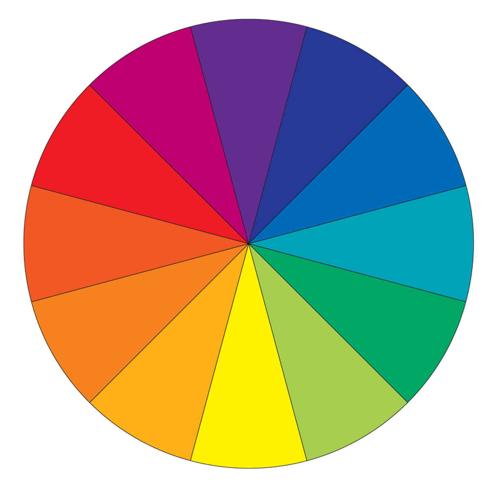

I've never been very good at using colour—in fact, I usually try to avoid it all along with gray tones and minimalistic color schemes.
However, in the world of web design, colour is one of the most crucial elements out there. It can be used to speak to different target audiences and convey different emotions.
Recently, I watched an informative Youtube Video titled "How To Use Color — Color Basics", where Greg Gunn shows a few easy tips and tricks for using colour effectively. Here is what I've learnt and some of my personal thoughts on the video!
The Colour Wheel
The colour wheel is an organization of 12 different colours. These colours break down into three fundamental ingredients: hue, saturation, and value.
 The colour wheel—a visual representation of twelve different colours.Hue, Saturation, and Value
- Hue is the colour you are looking at
- Saturation is the intensity of the hue
- Value is the brightness of the colour
How Do You Use Colour Effectively?
Why Your Colours Suck
- You're probably using too many colours. Try to keep it simple!
- You have too much saturation. When all your colours are too intense, it can make your colour scheme seem too bright.
- You don't have enough contrast. Try to make your colours stand out more. Here's a trick: set your image to black and white so that easily see the colour value and make adjustments.
Watching the video transform the first image into the second image blew my mind. It looked like a completely different image, despite only the colours being changed. It really demonstrates the importance of colour! By reducing the number of colours on the image, lowering the saturation, and tweaking the contrast, Greg was able to turn the image from "abysmal" to "amazing".
As an aspiring web developer, knowing how to use colours effectively is crucial. Various studies have shown that people tend to use design quality as their first indicator to the trustworthiness of a site. Overall, a good design can make a website look more legitimate and professional.
From this video, I've learnt the three main mistakes people make when working with colours. I will definitely keep them in mind whenever designing a graphic or creating a website!